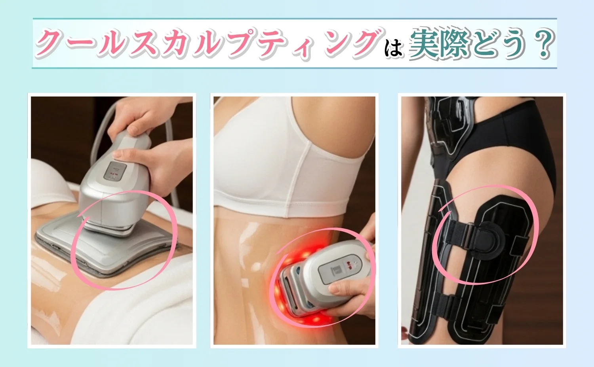

東京
効果
選び方
おすすめ


人気のおすすめクリニック
3 選！
ポテンツァ施術前に知っておくべきこと
ポテンツァとは
ポテンツァは高周波（RF）による美肌治療の一種で、マイクロニードルで皮膚に微細な穴を開け、高周波エネルギーを真皮層に届ける施術です。ニキビ跡、毛穴、肌質改善、シワ、たるみの改善に効果的です。
| 特徴 | 内容 |
|---|---|
| 施術方法 | マイクロニードル + 高周波エネルギー |
| 適応部位 | 顔全体、首、デコルテなど |
| 効果 | ニキビ跡、毛穴改善、肌質向上 |
| ダウンタイム | 数日〜1週間程度 |
| 施術時間 | 30分〜1時間程度 |
| 費用相場 | 5万〜15万円（部位による） |
| 持続性 | 3〜6ヶ月程度（定期的な施術が必要） |
（※）回数・期間は目安です。個人差や症例による違いがあります。上記は効果を保証するものではありません。
ポテンツァは、マイクロニードルで皮膚に微細な穴を開け、高周波エネルギーを真皮層に届けることで、コラーゲンの生成を促進し、肌質を改善する施術です。ニキビ跡や毛穴の開きが気になる方に特におすすめです。施術時間も比較的短く、日常生活への影響を最小限に抑えながら効果的に肌質を向上させることができます。
ポテンツァの施術の仕組み
ポテンツァはマイクロニードルで皮膚に微細な穴を開け、高周波（RF）エネルギーを真皮層まで届けることで、コラーゲンの生成を促進します。熱エネルギーによるアプローチが特徴です。
高周波エネルギーにより真皮層の細胞が活性化され、コラーゲンやエラスチンの生成が促進されます。肌のハリや弾力が向上し、ニキビ跡や毛穴の改善効果が得られます。
切開を行わず、マイクロニードルの微細な穴で完了するため、身体への負担が少なく、日常生活への影響も最小限に抑えられます。
ポテンツァのメリット・デメリット
ポテンツァの特徴を理解し、自分に合った施術かどうかを判断する参考にしてください。
| 分類 | 内容 |
|---|---|
| メリット |
|
| デメリット |
|
ポテンツァのリスクや副作用
ポテンツァはマイクロニードルによる施術のため、施術直後の赤み、腫れ、軽い痛みや熱感などの副作用が生じることがあります。施術後は保湿ケアが必要な場合もあります。
施術による副作用は一時的で軽度なものがほとんどです。気になる症状があれば、必ず担当医に相談しましょう。
起こりうる副作用
ポテンツァで起こりうる主な副作用は以下の通りです。
施術時の痛みや熱感
マイクロニードルによる軽い痛みや高周波による熱感が生じることがあります。麻酔クリームを使用することで痛みを軽減できます。通常は施術終了後すぐに治まります。
赤み・腫れ
施術部位に赤みや軽度の腫れが生じることがあります。通常は数日〜1週間程度で自然に治まります。
皮むけ・かさつき
高周波の熱により、皮むけや肌のかさつきが生じることがあります。保湿ケアをしっかり行いましょう。
効果の発現時期
効果が現れるまで個人差があります。施術後数週間〜数ヶ月程度で効果を実感できる場合が多いです。
痛みやダウンタイムについて
ポテンツァの施術後の痛みやダウンタイムは、マイクロニードルによる軽い痛みと高周波による熱感、その後の赤み・腫れが主な症状で、個人差があります。
一般的にダウンタイムを感じやすい時期は以下の通りです。
施術直後〜数日間
赤み・腫れが最も強い時期
保湿ケアが必要な期間
痛みや腫れが強い場合、または長引く場合は、担当医に相談しましょう。適切なケアと指示に従うことで、快適に回復できます。
施術前・施術後の注意点
ポテンツァの効果を最大限に引き出すため、以下の点に注意しましょう。
施術前の準備
施術前に十分なカウンセリングを受け、適応かどうか確認しましょう。日焼けを避け、抗凝固薬の使用については医師に相談してください。
施術後のケア
施術部位を清潔に保ち、保湿ケアをしっかり行いましょう。日焼けを避け、指示されたスキンケアを行ってください。
経過観察
施術後の経過を観察し、指示されたスケジュールでクリニックに通いましょう。
生活習慣の管理
施術前後は飲酒や激しい運動を避け、十分な休息を取ってください。体調が優れない場合は担当医に相談しましょう。
施術時の確認ポイント
保険適用について
ポテンツァは高周波による美肌治療の一種で、美容目的の施術となるため、原則として自由診療（自費診療）となります。
健康保険が適用されるのは、機能障害がある場合に限られます。通常の美肌目的の場合は自費となります。
原則自費負担のため、施術前に総額や追加費用を確認しましょう。
施術内容・計画を細かく確認する
ポテンツァを契約する際は、施術計画・範囲・効果の期待値などを具体的に確認しましょう。自分の目標や希望に合っているかが重要です。
例えば「ニキビ跡の改善」と言っても、施術回数や使用するチップの種類、施術間隔などがクリニックによって異なります。
施術後に計画が変更となる場合、追加料金が発生することもあるため、施術前に施術内容をしっかり確認しておきましょう。
追加費用がかからないか確認する
施術時には、追加の費用についても必ず確認しましょう。提示料金とは別に、追加施術・薬剤代・経過観察費用などが発生する場合があります。
追加費用が掛かる項目の例は以下の通りです。
- 追加施術費用
- チップ追加代
- 経過観察費用
- 保湿剤材料費
- アフターケア費用
追加費用については、施術前に必ず確認するようにしてください。
トラブル時の相談先
万が一、ポテンツァ施術についてトラブルになった場合は、以下の窓口に相談できます。
迷ったらがおすすめ
がおすすめの3つの理由
INFORMATION!